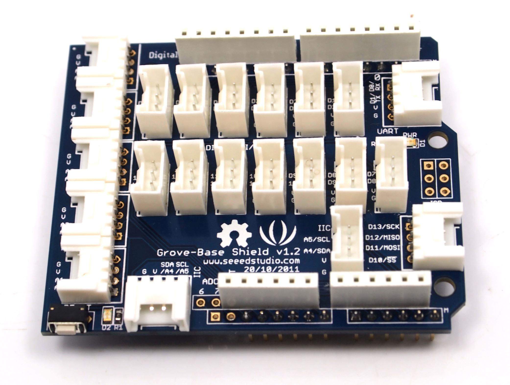
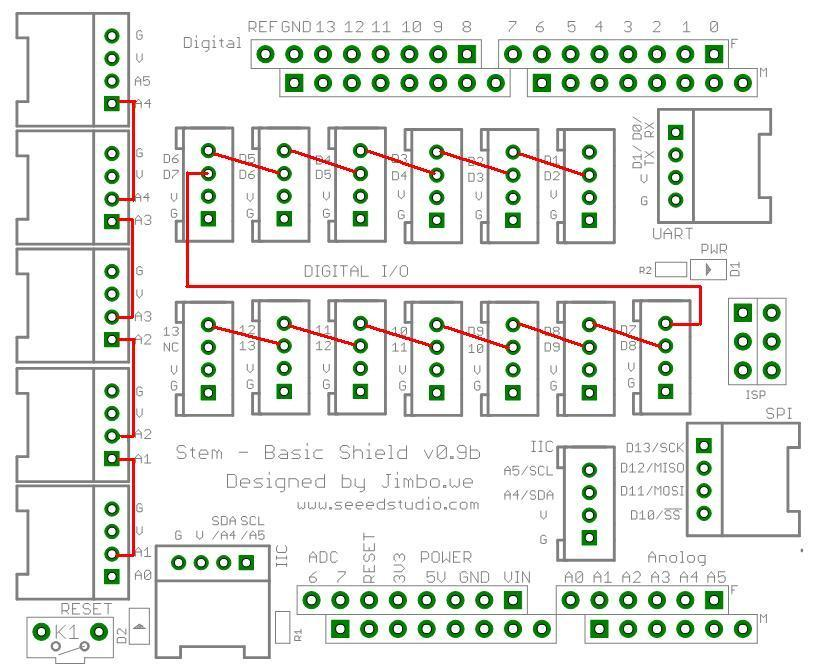
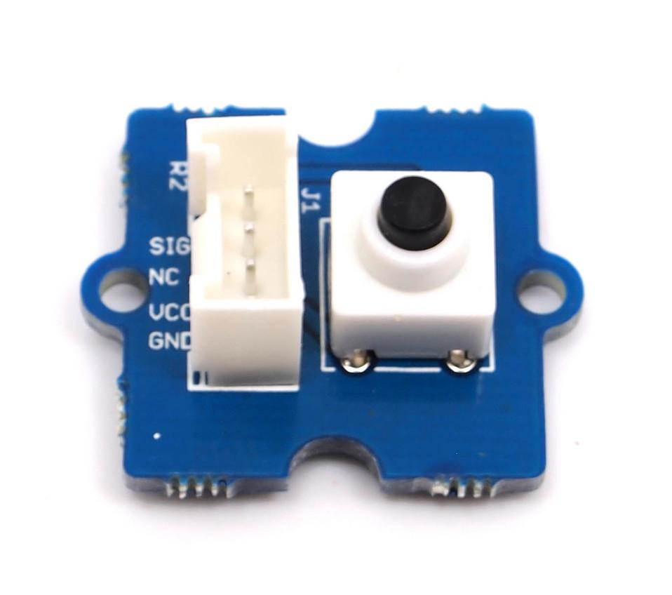
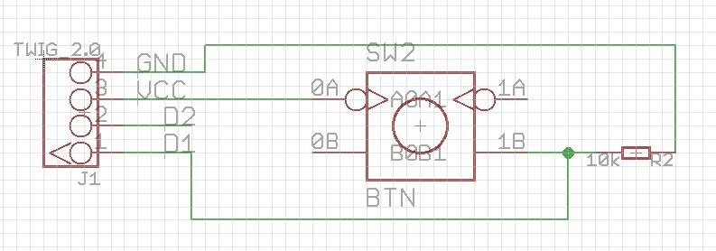
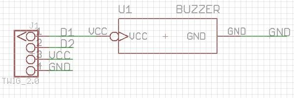
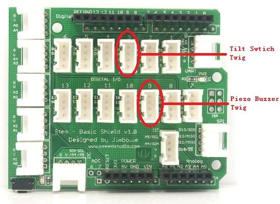
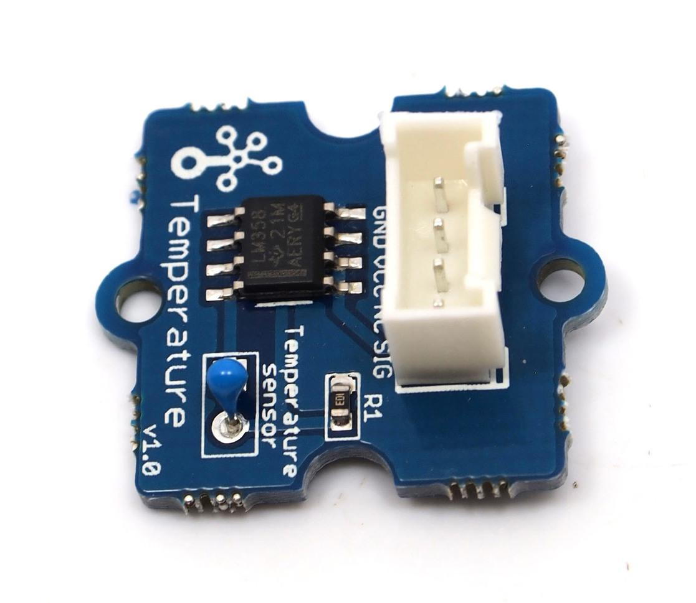
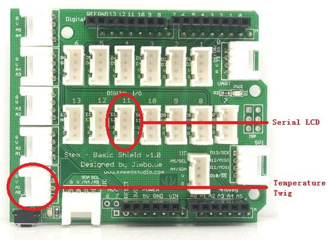

The Grove system is a modular, safe and easy to use group of items that allow you to minimise the effort required to get started with microcontroller-based experimentation and learning. Although there are many choices available for microcontroller development environments, the Grove system will work very well with the Arduino system.
What is new in Grove Starter Kit v1.1b:
The Grove Starter Kit v1.1b consists of the following items, as pictured below:

Now let's look at each component in more detail.
First we start with the Grove base shield board. Grove Base board is the new version of Electronic Brick Shield.The Grove base Shield is compatible with Seeeduino v2.21 (168p and 328p), and Arduino UNO and Duemilanove. We standardize all the connectors into 4 pins(Signal 1,Signal 2,VCC and GND) 2mm connectors, which simplify the wiring of electronics projects. The 4-pin buckled connectors also make the wiring situation more stable. We build all kinds of Grove units to match up with Grove Base Board. Still, you need not worry about compatibility between the Grove Grove Shield and your existing Electronic Bricks. We have many kinds of converter cables(still increasing) to deal with backwards-compatibility. The Grove is very similar in fashion to an Arduino shield board, and in fact is used as such with our Seeeduino or Mega board. In v1.0b, we move the analog connectors inward a little so that it will fit the higher power connector and USB connector. Here is a top-down view:

The purpose of the Grove base shield is to allow easy connection of any microprocessor input and output pins to the Grive units. Each socket is clearly labelled with its matching I/O pin. For a more detailed examination of the Grove, please consider the following diagram:

For those working with Seeduino or Arduino boards, the layout should be quite familiar. The labels on the "Power" header pins may be confusing - the new Arduino Uno has two ground pins between the Vin and 5v, and label "GND" twice, but the Grove labels match the Duemilanove which label "GND" once, wider, to indicate both pins.
There is one small thing to take note of when connecting to analog or digital sockets. Each socket contains 5V, GND, and two I/O pin connections:

When using the digital I/O, note the staggered alignment of the pins – that is, one socket handles D1 and D2, the next D2 and D3, and so on. If you are going to use an input Grove units and an output Grove which have two signal pins simultaneously (now the starter Kit v1.0b doesn't have two signal pins Grove), separate your wires so that a socket is between them as such:

Wires for two signal Grove units cannot sit side-by-side on the Grove Base board because one pin (such as D2) will be multi-using. Or, if two Grove units only use one digital pin, such as the tilt switch and the piezo, they can sit together on the Grove Base board as they only use one of the digital lines in the connecting wire and therefore will not interfere with each other. It is the same as the Analog I/O sockets. Make sure you know the silkscreen of each socket before you start wiring.
Each "Grove" is a peripheral board that connects to the Grove System "Grove" shield using a consistent 4-wire connectorised cable. The connector leads are Ground, Vcc, D2, and D1, where the D1 and D2 leads may be digital or analog input or output, depending on the equipment on the Grove units. The same format also supports I2C (IIC) signalling, and several of the Grove Base shield connectors are tied to Analog pins 4 and 5 to support it for future I2C-based Grove units.
Next, let's examine each of our “Grove units”, and then use each on in an example Arduino sketch that we can use with our Seeeduino boards...

This new version of button Grove contains one independent button, which are configured with pull-down resistor – ready for use with our microcontrollers as digital input. The button signals the SIG(D1) wire,NC(D2) is not used on this Grove .
ButtonSchematic


This new version of LED Grove consists of one green LED. It operates from SIG(D1). Perfect for use on Seeeduino digital outputs, or also can be controlled using pulse-width modulation. Each LED has a current-limiting resistor, which protects the LED and the Arduino from high current.
LED Grove Schematic
Now we can use Button module and LED module to make a small project: The LED will on when pushing the button otherwise the LED stays off. You will need a Grove - Basic Shield to connect those two Grove units to Seeeduino/Arduino. Connect Button module to D8 of Grove and LED module to D6; Then download the following sketch to Seeeduino/Arduino.
Connect the Grove units like the following Picture shows:
const int buttonPin = 8; // the number of the pushbutton pin
const int ledPin = 6; // the number of the LED pin
// variables will change:
int buttonState = 0; // variable for reading the pushbutton status
void setup() {
// initialize the LED pin as an output:
pinMode(ledPin, OUTPUT);
// initialize the pushbutton pin as an input:
pinMode(buttonPin, INPUT);
}
void loop(){
// read the state of the pushbutton value:
buttonState = digitalRead(buttonPin);
// check if the pushbutton is pressed.
// if it is, the buttonState is HIGH:
if (buttonState == HIGH) {
// turn LED on:
digitalWrite(ledPin, HIGH);
}
else {
// turn LED off:
digitalWrite(ledPin, LOW);
}
}

The tilt switch Grove is the equivalent of a button, and is used as a digital input. When the switch is level it is open, and when tilted, the switch closes. We can see from the schematic that it is wired to the SIG(D1) line, NC(D2) is not used on this Grove ; So the SIG(D1) outouts LOW when open and HIGH when due to the surface-mount resistor .
Tilt switch Grove Schematic

This is a simple yet enjoyable Grove to use. The piezo can be connected to digital outputs, and will emit a tone when the output is high. Alternatively it can be connected to an analog pulse-width modulation output to generate various tones and effects.
Buzzer Grove Schematic

The following example shows that Piezo Buzzer will beep as an alarm when Tilt Swtich is tilted.You will need a Grove - Basic Shield to connect those two Grove units to Seeeduino/Arduino. Connect Tilt switch Grove to D3 of Grove Base Board and Piezo Buzzer module to D9; Then download the following sketch to Seeeduino/Arduino.
Connect the Grove units like the following Picture shows:

const int tiltPin = 3; // the number of the tilt pin
const int buzzerPin = 9; // the number of the buzzer pin
// variables will change:
int tiltState = 0; // variable for reading the tilt status
void setup() {
// initialize the buzzer pin as an output:
pinMode(buzzerPin, OUTPUT);
// initialize the tilt pin as an input:
pinMode(tiltPin, INPUT);
}
void loop(){
// read the state of the tilt value:
tiltState = digitalRead(tiltPin);
// check if the tilt is close.
// if it is, the tiltState is HIGH:
if (tiltState == HIGH) {
// turn buzzer on:
digitalWrite(buzzerPin, HIGH);
}
else {
// turn buzzer off:
digitalWrite(buzzerPin, LOW);
}
}
The potentiometer Grove produces analog output between 0 and Vcc (5V DC with Seeeduino) on its SIG(D1) Pin. The D2 Pin is NC(not used). The angular range is 300 degrees with a linear change in value. The resistance value is 10k ohms, perfect for Arduino use. This may also be known as a “rotary angle sensor”.
Potentiometer Schematic

The following example shows that Seeeduino/Arduino reads Potentiometer Grove from A0(analog input pin 0), maps the result to a range from 0 to 255 and uses the result to set the pulsewidth modulation (PWM) of D9(digital output pin 9). You will need a Grove - Basic Shield to connect those two Grove units to Seeeduino/Arduino. Connect Potentiometer Grove to A0 of Grove Base board and LED Grove to D9; Then download the following sketch to Seeeduino/Arduino.
Connect the Grove units like the following Picture shows:
const int analogInPin = 0; // Analog input pin that the potentiometer is attached to
const int analogOutPin = 9; // Analog output pin that the LED is attached to
int sensorValue = 0; // value read from the pot
int outputValue = 0; // value output to the PWM (analog out)
void setup() {
// none
}
void loop() {
// read the analog in value:
sensorValue = analogRead(analogInPin);
// map it to the range of the analog out:
outputValue = map(sensorValue, 0, 1023, 0, 255);
// change the analog out value:
analogWrite(analogOutPin, outputValue);
// wait 10 milliseconds before the next loop
// for the analog-to-digital converter to settle
// after the last reading:
delay(10);
}
The Relay Grove is a digital normally open switch that controls a relay capable of switching much higher voltages and currents than your normal Arduino boards. When set to HIGH, the LED will light up and the relay will close allowing current to flow. The peak voltage capability is 250V at 10 amps.
Please exercise great care when working with mains voltages— if in doubt contact a professional such as a licensed electrician for help.
Relay Schematic

The following example shows that Relay Grove close when Tilt Swtich is level; and open when Tilt Swtich is tilted.You will need a Grove - Basic Shield to connect those two Grove units to Seeeduino/Arduino. Connect Tilt switch Grove to D3 of Grove Base Board and Relay Grove to D9; Then download the following sketch to Seeeduino/Arduino.
Connect the Grove units like the following Picture shows:
const int tiltPin = 3; // the number of the tilt pin
const int relayPin = 9; // the number of the relay pin
// variables will change:
int tiltState = 0; // variable for reading the tilt status
void setup() {
// initialize the relay pin as an output:
pinMode(relayPin, OUTPUT);
// initialize the tilt pin as an input:
pinMode(tiltPin, INPUT);
}
void loop(){
// read the state of the tilt value:
tiltState = digitalRead(tiltPin);
// check if the tilt is close.
// if it is, the tiltState is HIGH:
if (tiltState == LOW) {
// turn relay on:
digitalWrite(relayPin, HIGH);
}
else {
// turn relay off:
digitalWrite(relayPin, LOW);
}
delay(10);
}

The temperature sensor Grove uses a thermistor which returns the ambient temperature in the form of a resistance value, which is then used to alter Vcc (5V with our Seeeduinos). Our board then converts this voltage value measured by an analog input pin to a temperature. The operating range is -40 to 125 degrees Celsius, with an accuracy of ±1.5ºC.
As the temperature increases, the resistance value of the sensor decreases:

Although the calculation of the actual temperature can seem quite complex, it is simple to execute. For an example of how this is done, please refer to project seven described later in this guide.
Temperature Sensor Grove Schematic


This has been upgrated to Serial LCD v1.0b.This consists of two parts, a module holding an 16 character by 2 line LCD, and the Grove itself(most may receive the two-units-soldered together-version). The LCD has an interface that is easily used under the Arduino IDE using the special Seeedstudio SerialLCD v1.0b library.
Before using your LCD Grove , download the library from: http://garden.seeedstudio.com/images/e/e3/SerialLCD_v1.0b_library.zip ,or click Seeedstudio SerialLCD v1.0b library. Then extract the “SerialLCD-Library.zip” folder and copy it into your Arduino libaries folder, usually located at ..\Arduino-xx\libraries.
Please see project six described later on in this guide.For a detailed information on how to use your Serial LCD Grove ,you can go to Grove - Serial LCD page,there are plenty of examples.
The following example shows that Seeeduino/Arduino reads Temperature Sensor Grove from A0(analog input pin 0), and use Serial LCD Grove to display the temperatuer. You will need a Grove - Basic Shield to connect those two Grove units to Seeeduino/Arduino. Connect Potentiometer Grove to A0 of Grove Base board and Serial LCD Grove to D11; You also need the Seeedstudio SerialLCD v1.0b library to make the Serial LCD to work.Then download the following sketch to Seeeduino/Arduino.
Connect the Grove units like the following Picture shows:

#include <SerialLCD.h>
#include <SoftwareSerial.h> //this is a must
#include <math.h>
// initialize the library
SerialLCD slcd(11,12);//this is a must, assign soft serial pins
const int tempPin = 0;
void setup() {
// set up
slcd.begin();
// Print a message to the LCD.
slcd.print("Temperature is:");
}
void loop() {
// set the cursor to column 0, line 1
// (note: line 1 is the second row, since counting begins with 0):
slcd.setCursor(0, 1);
// print the number of seconds since reset:
// float TT = readTemp();
SLCDprintFloat( readTemp() ,1);
slcd.print(" Celsius");
delay(1000);
}
void SLCDprintFloat(double number, uint8_t digits)
{
// Handle negative numbers
if (number < 0.0)
{
slcd.print('-');
number = -number;
}
// Round correctly so that slcd.print(1.999, 2) prints as "2.00"
double rounding = 0.5;
for (uint8_t i=0; i<digits; ++i)
rounding /= 10.0;
number += rounding;
// Extract the integer part of the number and print it
unsigned long int_part = (unsigned long)number;
float remainder = number - (float)int_part;
slcd.print(int_part , DEC); // base DEC
// Print the decimal point, but only if there are digits beyond
if (digits > 0)
slcd.print(".");
// Extract digits from the remainder one at a time
while (digits-- > 0)
{
remainder *= 10.0;
float toPrint = float(remainder);
slcd.print(toPrint , DEC);//base DEC
remainder -= toPrint;
}
}
float readTemp()
{
const int B=3975;
double TEMP;
int sensorValue = analogRead( tempPin );
float Rsensor;
Rsensor=(float)(1023-sensorValue)*10000/sensorValue;
TEMP=1/(log(Rsensor/10000)/B+1/298.15)-273.15;
return TEMP;
}
This Grove module allows you to add your own circuitry or components to your Grove system prototypes. This allows you access to all four lines from the connector cable – S0, S1, VCC and GND. There is also an extra normally-open button to take advantage of. The hole spacing makes using normal DIP-format ICs and other components very simple. You may wish to purchase more for future use in advance.
Here is how to assemble Stardle Kit with Starter bundle harness.
http://www.seeedstudio.com/depot/images/product/sbundle01_03.jpg
For more infornation you can go to Starter bundle harness.
Now you should be familiar with your Grove Base Board and Grove units, so let's examine them in more detail with the following projects:
They are written for use with the Arduino environment. All of the following projects can be made with only a Seeeduino board and the Grove starter Kit. If you have not already done so, download and install the latest version of the Arduino IDE from: http://arduino.cc/en/Main/Software.
Furthermore, if you are using a Seeeduino or Seeeduino Mega, make sure you have the switches set to 5V and auto, as such: 
This ensures the board is running at 5V DC from the USB cable, and that the board will auto-reset upon uploading your sketch. Otherwise you will have to manually reset your Seeeduino before the sketch starts operation.
By now we hope you have enjoyed experimenting with your Seeeduino and the Grove starter Kit. You will find it simple and convenient to use this system to develop your ideas and prototypes. For technical support please email info@seeedi.com.
In the meanwhile, don't forget to regularly check the Seeedstudio Bazaar website for new Grove units and other interesting and useful products at: http://seeedstudio.com/depot/
If you have questions or other better design ideas, you can go to our forum or wish to discuss.
| Revision | Descriptions | Release Date |
| GROVE Starter Kit v1.0b | draft release | Dec 31, 2010 |
| GROVE Starter Kit v1.1b | draft release | May 19, 2011 |
There is no bug found until now. Have you found? Please write them here, we want to know what you have to say!
What do you think of our GROVE System and GROVE - Starter Kit? Don't forget that we always welcome your views on our goods and services so that we can continue to meet all your stock requirements. You can write them here or go to Seeedstudio Wish page.
Click here to buy GROVE - Starter Kit ,or other products you like.
This documentation is licensed under the Creative Commons Attribution-ShareAlike License 3.0 Source code and libraries are licensed under GPL/LGPL, see source code files for details.
Links to external webpages which provide more application ideas, documents/datasheet or software libraries
Copyright (c) 2008-2016 Seeed Development Limited (www.seeedstudio.com / www.seeed.cc){kind=link}
{kind=link}